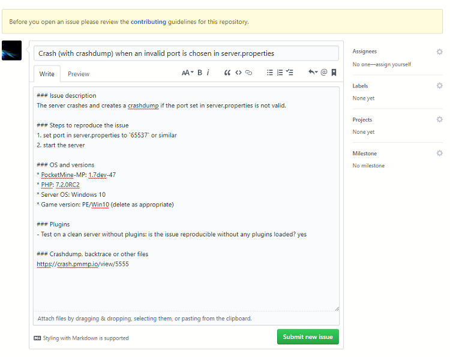

Using the GitHub Issue Tracker
Did your server crash, or did you encounter a bug?
Make sure you’re using the latest available version of XPocketMP, as the bug might already have been fixed.
Try and reproduce it WITHOUT PLUGINS, as plugins can frequently cause issues.
Ask for help on our forums before creating an issue.
Warning
Please do not use our issue tracker for support requests, but instead seek assistance on the forums or our community Discord. Support request issues will be closed as per the contribution guidelines.
Note
Make sure you read the contribution guidelines before creating an issue.
If your issue is still unresolved and you’re sure the issue is caused by XPocketMP itself, then make a new issue on GitHub.
Issue template
An issue template is provided, showing the information that we require for an issue submission. Do not just delete the template - fill it with the information it asks for. Give as much information as you can about when or what happened.
